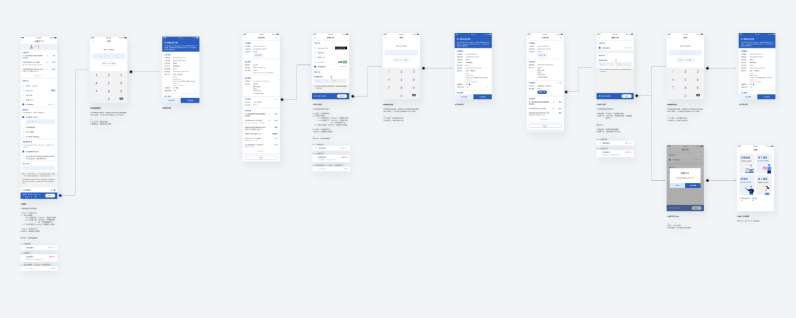
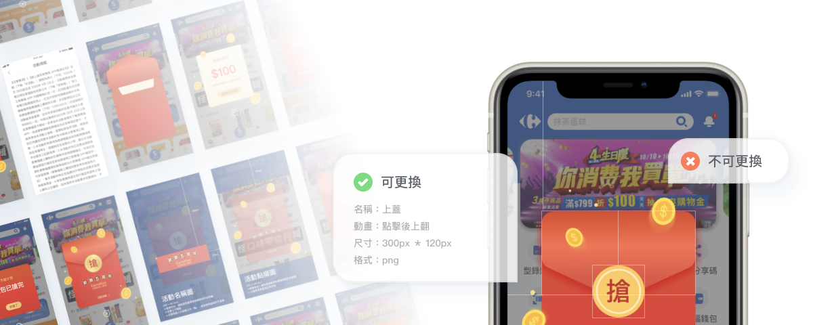

會員系統的改善
客戶長年使用不同的會員系統，許多資料欄位也未統一，因此造成會員資料有許多疏漏。加上客戶現有複雜的會員機制，以至於使用者常常因系統無法抓到資料，操作到流程一半而卡住。而為了改善此問題，我們除了更新原有的登入註冊流程外，也特別客製化一系列整併、修改帳號的流程。
增加付款方式
線上購物的付款方式多樣性會影響使用者的購買意願，因此在結帳流程除了新增App的錢包選項外，也持續增加不同的電子支付。

紅包模組化
為了配合不同檔期活動需要不同的視覺需求，因此將紅包拆成不同元件，並定義每個元件的詳細規則，讓客戶之後可以輕鬆更換圖片。

加入App Clips應用
臺灣首波採用 Apple iOS 14 新技術「輕巧 App 」的應用軟體之一，並且很榮幸能上 iPhone iOS 14官網的首頁。

只要透過NFC感應技術就可以啟動 Apple Clips 快速申辦會員，並且可將會員卡加入 Apple Wallet 內，使用者將可獲得更快速辨識會員與結帳服務。除此之外也提供顧客感應購物，只要設有NFC感應的商品區，就可現場直接感應付款，商品就會送貨到家，不需排隊結帳，讓結帳作業更為便利。 相關報導